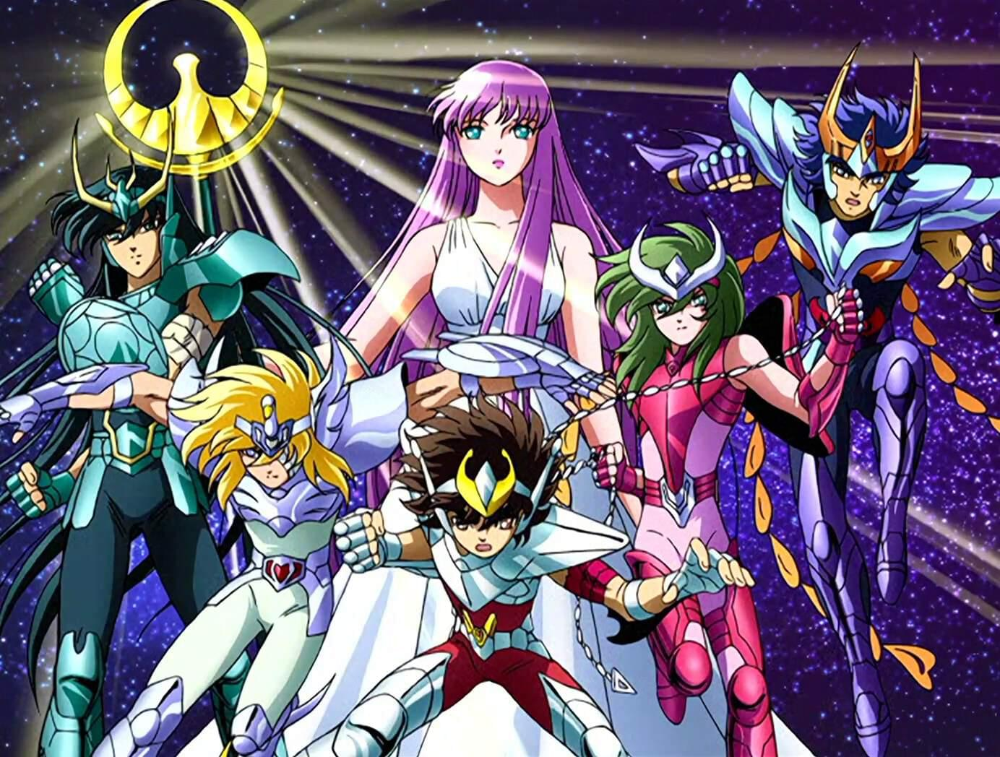

Venha Conheça Os Cavaleiros dos Zodiaco
Saint Seiya (nome original da série) conta a história de um grupo de cinco jovens guerreiros cuja função era proteger Saori Kido, reencarnação de Atena, a deusa grega da sabedoria. Para lutar, eles utilizam a energia interior e do cosmos, e suas armaduras que são inspiradas em constelações e na mitologia grega.


- 
-

-

-

-

-


Disponível nos seus dispositivos favoritos
-

Computador
- Chrome OS
- MacOS
- PC Windows
-

TV
- Amazon Fire TV
- Android TV
- Apple TV
- Chromecast
- TVs LG
- Roku
- Samsung
-

Videogames
- PS4
- PS5
- Xbox One
- Xbox Serix X
- Xbox Serix S
-

Celulares e tablets
- Tablets Amazon Fire
- Celulares e Tablets Android
- iPhone e iPad
Perguntas frequentes
-
Qual a história dos Cavaleiros do Zodíaco?A história acompanha um órfão, Seiya, que descobre ter uma força de origem cósmica chamada Cosmo e que seu destino é ser um dos guardiões da deusa Atena, encarnada numa garota chamada Saori. Além dele, outros jovens estão predestinados a esse papel, de Cavaleiros de Atena
-
Quem era o mais forte dos Cavaleiros do Zodíaco?Saga de Gêmeos é um poderoso cavaleiro de ouro, sendo considerado como o mais poderoso dentre os doze cavaleiros de ouro, ele era um exemplo de conduta e comprometimento para com sua deusa Athena. O cavaleiro de gêmeos possuía um irmão gêmeo chamado Kanon, que propôs que eles matassem Athena e comandassem o mundo.
-
Quem e o autor de cavaleiros dos zodiaco ?Os Cavaleiros do Zodíaco é uma série japonesa de mangá e anime escrito e ilustrada por Masami Kurumada.